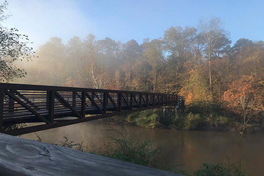
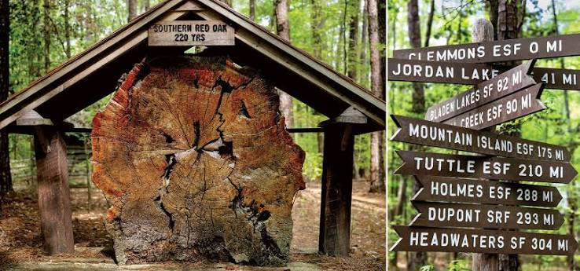

Discover Clayton's Natural Side
Get Outside and Explore
Clayton is home to several parks, greenways, and natural areas that offer an escape from everyday life. From paved trails along the Neuse River to wooded paths through the forest, there are plenty of opportunities to enjoy the outdoors.
Whether you're looking for a family-friendly adventure or a peaceful place to unwind, these local destinations are worth exploring.
Clayton River Walk on the Neuse

Stretching approximately four miles along the Neuse River, Clayton River Walk offers a scenic paved trail perfect for walking, running, and biking.
The trail connects with other regional greenways and features beautiful wooded scenery and a pedestrian bridge across the river. It's a great destination for an afternoon outdoors.
Location: 2686 Covered Bridge Road, Clayton, NC
Clemmons Educational State Forest

Clemmons Educational State Forest offers a unique outdoor experience with peaceful hiking trails and educational exhibits.
Visitors can explore the forest's famous Talking Tree Trail, learn about local wildlife and forestry, or enjoy a picnic surrounded by nature. It's especially great for families looking for an educational adventure.
Location: 2411 Old U.S. 70 West, Clayton, NC
Plan Your Outdoor Adventure
Before You Head Out
A little preparation can make your visit even better. Bring comfortable shoes, water, and anything else you might need for your activity.
Remember to respect the environment, stay on designated trails, and check park hours and trail conditions before visiting.
Explore More of Clayton
Finished enjoying the outdoors? Head downtown to discover Clayton's local restaurants, shops, and attractions.
Discover Downtown